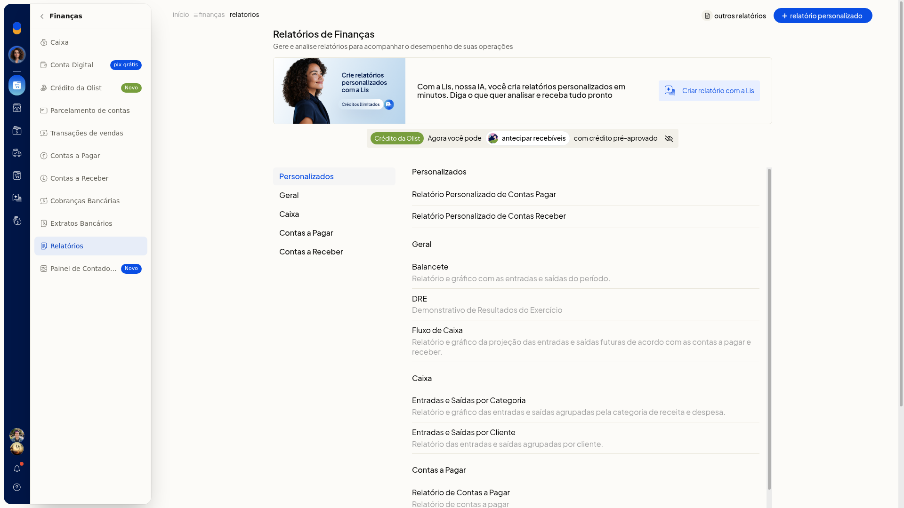
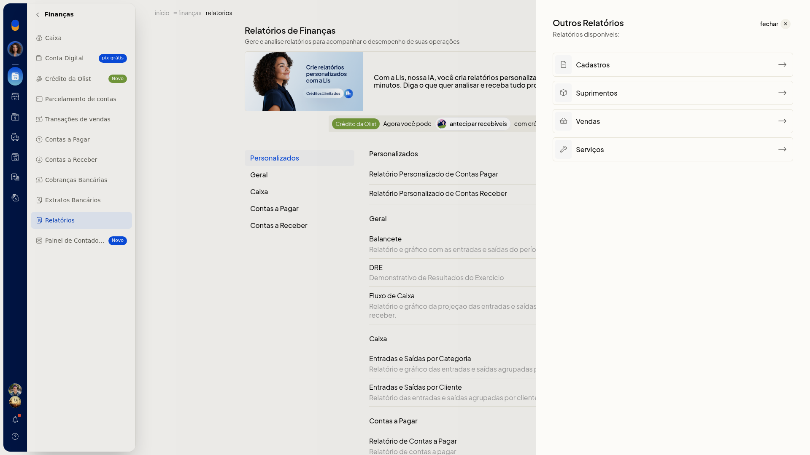

SPED e Sintegra gerados pelo ERP
No ERP da Olist, os caminhos de Finanças indicados para este tema não geram arquivo SPED nem Sintegra. Em Finanças não há item com esses nomes.
Em Finanças > Relatórios, a lista e o painel Outros Relatórios também não levam a SPED nem a Sintegra. Painel de Contadores é outra tela: serve para autorizar o contador a exportar notas e relatórios, não para gerar esses arquivos.
Instruções
-
No menu lateral, clique em Finanças.

-
Clique em Relatórios. A lista mostra relatórios como Personalizados, Balancete, DRE, Fluxo de Caixa, entradas e saídas e Contas a Pagar. Nenhum título é SPED ou Sintegra.

-
Abra Outros Relatórios. O painel traz só as categorias Cadastros, Suprimentos, Vendas e Serviços.

Resultado
Depois desses caminhos, você permanece nos relatórios de Finanças e no painel Outros Relatórios. Nenhum dos dois apresenta SPED ou Sintegra para gerar ou baixar.